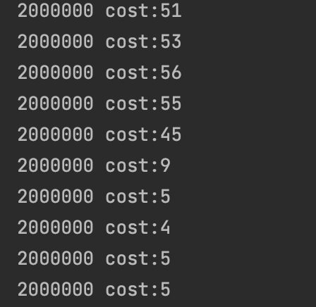
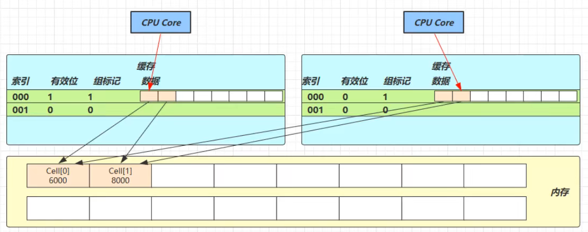

JUC-longAdder
5. 共享模型之无锁
5.2 实现CAS的工具类
5.2.5 原子累加器LongAdder
原子累加器，就是对整数做累加操作，虽然AtomicInteger / AtomicLong也可以完成累加操作，但在JDK8后新增了几个专门做累加的类：LongAdder / LongAccumulator，性能要更高。
例：AtomicLong和LongAdder做对比，4个线程每个线程自增50万次，最终结果应为200万。
1
2
3
4
5
6
7
8
9
10
11
12
13
14
15
16
17
18
19
20
21
22
23
24
25
26
27
28
29
30
31
32
33
34
35
36
37
38
39
40
41
42
| public class Test1 {
public static void main(String[] args) throws InterruptedException {
for (int i = 0; i < 5; i++) {
demo(
()-> new AtomicLong(0),
(adder) -> adder.getAndIncrement()
);
}
for (int i = 0; i < 5; i++) {
demo(
()-> new LongAdder(),
(adder) -> adder.increment()
);
}
}
private static <T> void demo(Supplier<T> adderSupplier, Consumer<T> action){
T adder = adderSupplier.get();
List<Thread> ts = new ArrayList<>();
for (int i = 0; i < 4; i++) {
ts.add(new Thread(()->{
for (int j = 0; j < 500000; j++) {
action.accept(adder);
}
}));
}
long start = System.nanoTime();
ts.forEach(Thread::start);
ts.forEach(thread -> {
try {
thread.join();
} catch (InterruptedException e) {
e.printStackTrace();
}
});
long end = System.nanoTime();
System.out.println(adder+" cost:"+(end-start)/1000000);
}
}
|
结果：

性能差距十分明显。LongAdder提升性能的原因很简单，就是在有竞争的时候，设置多个共享变量（累加单元），如线程T0累加在Cell[0]上，线程T1累加在Cell[1]上，最后将结果汇总，从而降低CAS重试失败的可能性，达到提升性能的效果。竞争越大就设置越多个累加单元，但不会超过CPU的核心数。
5.2.6 LongAdder源码
LongAdder类有几个关键域：
1
2
3
4
5
6
|
transient volatile Cell[] cells;
transient volatile long base;
transient volatile int cellsBusy;
|
5.2.6.1 缓存行伪共享
LongAdder中Cell（累加单元）类：
1
2
3
4
5
6
7
8
9
10
11
12
| @sun.misc.Contended
static final class Cell {
volatile long value;
Cell(long x) { value = x; }
final boolean cas(long cmp, long val) {
return UNSAFE.compareAndSwapLong(this, valueOffset, cmp, val);
}
}
|
简单来说，每个CPU核心有自己的一级缓存、二级缓存，核心之间有共享的三级缓存，三级缓存之下才是内存。因为CPU从缓存中读取和从内存中读取速度差异很大，所以需要靠预读数据到缓存来提升效率。
缓存以缓存行为单位，每个缓存行对应一块内存，大小一般是64byte = 8long。缓存的存在导致数据副本的产生，即同一份数据会缓存在不同核心的缓存行中。CPU要保持数据的一致性，所以如果某个CPU核心更改了数据，其他CPU核心中该数据所在的整个缓存行都会失效。
例：

因为Cell是数组形式，在内存中是连续存储的，一个Cell为24字节（16字节的对象头和8字节的value），因此一个缓存行中可以存下2个Cell对象。
那么如果Core0要修改Cell[0]，Core1要修改Cell[1]，无论谁修改成功，都会让另一个CPU核心的缓存行失效。
通过@sun.misc.Contended注解，让使用此注解的对象或字段前后各增加128字节的padding，从而让CPU预读对象至缓存时占用不同的缓存行，避免出现其他核心的缓存行失效的情况。